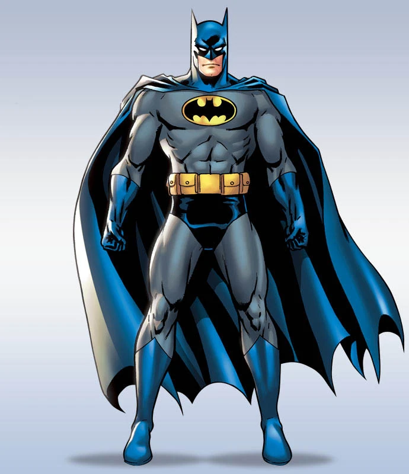
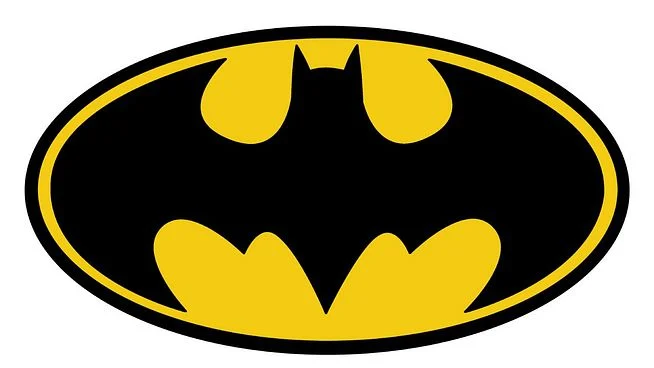

Bruce Wayne, alias Batman, est un super-héros de fiction appartenant à l'univers de DC Comics.
Créé par le dessinateur Bob Kane et le scénariste Bill Finger, il apparaît pour la première fois dans le comic book Detective Comics no 27 en 1939 sous le nom de The Bat-Man.
Bien que ce soit le succès de Superman qui ait mené sa création, il se détache de ce modèle : il n'a aucun pouvoir.
Batman est un humain qui a décidé de lutter contre le crime après avoir vu ses parents se faire abattre par un voleur dans l’Allée du Crime, ruelle mal famée de Gotham City.
